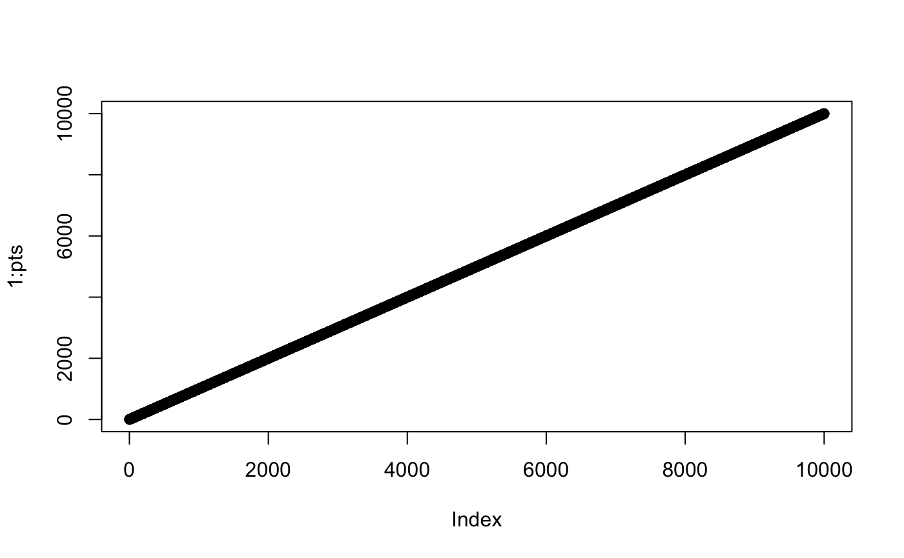

The majority of R programmers have not been trained to give much attention to the security of the code that they write. This is for good reason since running R code on your own machine with no external input gives little opportunity for attackers to leverage your R code to do anything malicious. However, as soon as you expose an API on a network, your concerns and thought process must adapt accordingly.
There are a variety of factors and attacks that you should consider when developing your Plumber APIs, but the attention you give to each will vary based on the audience of your API. On one extreme, if your API is running on an internal server on your own network and uses authentication to restrict access to only a handful of trusted users, you may be justified in overlooking some of these attack vectors. On the other hand, if your Plumber API is available on the Internet with no authentication, then you should seriously consider each of these potential vulnerabilities and convince yourself that you have properly accounted for each.
Networking & Firewalls
From a networking standpoint, there are two fundamentally different approaches for developing R code.
- You can develop locally using a tool like RStudio
Desktop. In this case, the R session (and any Plumber APIs that you
run()) will be housed on your local machine. - You can develop on a remote machine using a tool like RStudio Server. Here, the R session is running on a remote server accessed across a network.
In the first case, there’s typically very little to consider from a
networking perspective. Your APIs will be accessible at
http://127.0.0.1:8000 by default (localhost is
synonymous with the local IP address 127.0.0.1) and you
likely won’t need to concern yourself with firewalls or network
proxies.
In the second case, however, you may need to consider the network environment in between yourself and the server running the API. These are the same considerations you’ll need to make when hosting an API on a server for production use. In particular, you should investigate whether or not there are any firewalls between the server hosting the Plumber API and the clients that you want to be able to connect.
Firewalls are a way to block undesired network traffic. Most desktop computers and many servers come with firewalls enabled out-of-the-box. This means that if you want to expose your API running on port 8000, you will need to configure your firewall to accept incoming connections on that port. Firewalls can also be configured on other network intermediaries, so you may need to configure multiple firewalls to allow traffic through in order to expose the desired port to your API clients.
HTTPS
HTTPS is a secure form of HTTP. Many people are now aware that they should check that their browser displays a padlock associated with HTTPS before they enter sensitive information like a credit card number. HTTPS is important to consider when developing Plumber APIs, as well. HTTPS primarily offers two protections:
- It encrypts the information being sent between the API client and the Plumber process using TLS (often still referred to as its predecessor, “SSL”). This prevents others on the network from being able to read the information being sent back and forth.
- It gives the API client confidence that it’s communicating with your Plumber process, as opposed to an imposter.
These two assurances are critical if your API will be handling any sensitive data or performing actions intended only for authenticated users. Some hosting options support serving on both HTTP and HTTPS simultaneously. The most secure configuration would be to redirect incoming HTTP traffic to your HTTPS hosting option.
As an added layer of protection, you can consider enabling HTTP Strict Transport Security (HSTS). HSTS is a way to instruct clients that – in the future – they should refuse to connect to this server over unsecure HTTP. This ensures that no imposter server would be able to trick a client into connecting over insecure HTTP in the future.
Unfortunately, Plumber does not implement HTTPS support natively, but most of the documented hosting options offer ways to deploy HTTPS and HSTS in front of your Plumber API.
Denial Of Service (DoS)
Denial of service (DoS) attacks are employed in order to temporarily shut down a server or service by overwhelming it with traffic. A DoS scenario could be caused by a single ignorant user unintentionally making a request that could ask the server to do some impossible task, or could be intentionally introduced by a malicious actor leveraging a vast number of machines to repeatedly make requests that are expensive for the server to respond to. The later form is often called a distributed denial of service attack (or DDoS) and typically requires special infrastructure and network capacity that is beyond the scope of what we’ll discuss here.
However, there are practices that you should employ when designing your Plumber API to put safety guards around the work that an API request might instigate.
#* This is an example of an UNSAFE endpoint which
#* is vulnerable to a DOS attack.
#* @get /
#* @serializer png
function(pts=10) {
# An example of an UNSAFE endpoint.
plot(1:pts)
}The expected output here is a harmless plot.
This plot takes a negligible amount of time to create.
However, plots with more points will take more time to create.

This plot, with 10,000 points added, took 0.122 seconds to generate. While that doesn’t sound like much, if we exposed this API publicly on the Internet, an attacker could easily generate enough traffic on this endpoint to overwhelm the Plumber process. Even worse, an attacker could make a request on this endpoint with millions or billions of points which might cause our server to run out of memory or consume so much CPU that it deprives other important system resources. Either case could result in our Plumber process crashing altogether.
The solution, in this case, is to ensure that we have reasonable safety guards in place for any user input.
#* This is an example of an safe endpoint which
#* checks user input to avoid a DOS attack
#* @get /
#* @serializer png
function(pts=10) {
if (pts > 1000 & pts > 0){
stop("pts must be between 1 and 1,000")
}
plot(1:pts)
}Here you can see that we only allow the user to request a graph with up to 1,000 points. Any requests exceeding that limit will immediately be terminated without any further computation.
You should be very attentive to the resources that could be consumed by any of your filters or endpoints. Consider the various values that a user could provide for each of your API endpoint’s parameters and ensure that the behavior of the system is reasonable in those cases. For API endpoints that do require extensive computation, consider how you could protect those endpoints (perhaps only exposing them for authenticated users) to prevent a malicious user from abusing the system.
Sanitization & Injection
Any time you accept input from a user in your code, you should plan for the worst-case scenario. If, for example, your API endpoint allows the user to specify the name of a file that should be read out of a particular directory and then returns its contents, you might naively implement it like so.
#* This is an example of an UNSAFE endpoint which
#* does not sanitize user input
#* @get /
function(file) {
# An example of an UNSAFE endpoint.
path <- file.path("./datasets", file)
readLines(path)
}Unfortunately, this API endpoint does not properly sanitize the user
input. The user could set the file parameter to
../plumber.R and now the endpoint would return the source
code of your Plumber API. Of course they could just as easy attempt to
read other files that might contain API keys or other sensitive
data.
One solution in this case is to strip all special characters off of the user input which will prevent users from being able to escape into a different directory.
#* This is an example of an endpoint which
#* checks user input.
#* @get /
function(file) {
# Strip all "non-word" characters from user input
sanitizedFile <- gsub("\\W", "", file)
path <- file.path("./datasets", sanitizedFile)
readLines(path)
}File paths are not the only opportunity for malicious input to do damage to your system, however. Another way in which user input can be dangerous is an attack known as “cross site scripting,” or “XSS.” This attack can be leveraged whenever user input may be rendered in a user’s browser. For instance if you had an endpoint which allows users to comment on a page and then later displays those comments to other users, an attacked could craft a comment such as:
"This is a comment with JavaScript! <script>alert('I could do something bad here!');</script>As you can see, the comment has JavaScript embedded within it, in
this case used to popup a message to the user. Of course JavaScript
could be used in other harmful way by redirecting your users to a
malicious site, for instance, or uploading data that they have special
access to on your server to some other destination. Any user input that
might be included on an HTML page should be properly escaped (see
htmltools::html_escape for help).
Lastly, user input can be used in an “injection attack,” in which the user injects malicious commands that might be sent to another system. The best known in this family are SQL injection attacks, in which user input that is meant to be included in a SQL query to be executed against a database might contain additional SQL commands that could leak data or do damage to your database. Further details about SQL injection attacks and mitigation strategies in R are available here.
In summary, be sure to separate “trusted” from “untrusted” objects in your API implementation. Anything which the user provides should be considered “untrusted” until it has been escaped or sanitized. At that point you can consider the object to be “trusted” and proceed to take further actions on it.
Cross-Origin Resource Sharing (CORS)
By default, the API endpoint forbids “cross-domain” requests, but it’s possible with a workaround to override this behavior creating a custom function that will forward the right headers to the API using a filter such as the following snippet.
#* @filter cors
cors <- function(res) {
res$setHeader("Access-Control-Allow-Origin", "*")
plumber::forward()
}Once this filter is defined, each endpoint will allow “cross-domain”
requests. It’s possible to disable it for some, by appending the line
#* @preempt cors before the declaration of a function like
this :
#* @preempt cors
#* @get /sub
cors_disabled <- function(a, b){
as.numeric(a) - as.numeric(b)
}Understand that, this is a temporary workaround and can constitute
critical security issues if some endpoints that shouldn’t be exposed
through CORS and have been enabled by default.
Cookies
In the section on setting cookies, we discussed the mechanics of setting cookies. However, if you intend to use cookies for any security-sensitive purpose, you should be aware of some ways that cookies can be exploited.
First and foremost, recognize that that the client has the ability to modify or fabricate the cookies that they send to your API. So storing preferences that the user themselves provided in a cookie is not a concern. Storing something with security implications – like the identity of the user making requests – however, would be; a malicious user would just need to modify the user ID saved in their cookie in order to trick your API into thinking that they were someone they’re not.
There are two common workarounds to this concern. You can store all session information on the server identified by long, cryptographically random IDs and only rely on the cookie to store the ID. Or you can use signed/encrypted cookies, as detailed in the section on setting encrypted cookies.
You should also be aware of how cookies will be handled and managed
by clients. You can manage these properties by providing different
parameters to the setCookie() call.
-
expiration - When the cookie should expire. Can
either be a
POSIXtobject that gives the time explicitly, or a raw integer which will be interpreted as the number of seconds in the future when this cookie should expire. If no value is provided, the cookie will be asessioncookie, meaning that it will persist until the user closes the tab/browser. Remember, however, that a client may accidentally or maliciously retain this cookie beyond its assigned expiration time. From a security standpoint, you cannot rely on a client to be well-behaved and to delete this cookie at the assigned time. -
http - The
HttpOnlyproperty on a cookie determines whether or not the cookie should be accessible to JavaScript running on your domain. If you were using a cookie to persist user settings and host some JavaScript that may also leverage the preferences stored in that cookie, then you would wanthttpparameter to beFALSE, indicating that the cookie should not beHttpOnly, and should be available to JavaScript. If you were storing a session ID in the cookie that is only interpretable by the server, then you should sethttptoTRUE. There are a variety of attacks (such as “cross-site scripting”) that would enable an attacker to run malicious JavaScript on your clients’ machines, so it’s wise to limit the amount of information accessible from JavaScript. -
secure - If
TRUE, instructs clients to only send the cookie when connecting to your server over HTTPS. HTTPS is a mechanism by which clients can gain more assurance that the server they’re connected to is indeed the server that they intended to be communicating with. If your API uses HTTPS, using secure cookies protects against a use case in which an attacker tricks one of your clients into connecting to an HTTP server impersonating your API. In that scenario, a client may send their cookies to this malicious server, at which point the attacker could use those cookies on your server to impersonate the actual user. Note that you shouldn’t enable this until you have your API stably running HTTPS.
Additionally, bear in mind that if an attacker gets physical access to a client who has a valid cookie, the attacker could copy that cookie off to a different machine and begin using it themselves. Unfortunately, you can’t perfectly protect against such attacks, but you can minimize the impact by 1.) using shorter session lifetimes (perhaps a few hours instead of days), 2.) invalidating sessions after a period of user inactivity, or 3.) rotating the session ID periodically; this way you’d be able to detect that multiple clients were trying to use the same session and could take action. You can also consider adding an additional layer of security around very security-sensitive endpoints (like changing a user’s password).
Lastly, if using encrypted cookies to store sensitive information, you should remember that expiring a cookie is an instruction that you’re sending to the client that may or may not be honored. Thus if you were to set an encrypted cookie on a client to authenticate the user and that user wishes to log out, all you can do is instruct the client that they should delete that cookie. If the cookie had been stolen or if a misbehaving client doesn’t delete the cookie, it’s possible that that cookie could still be used to continue making authenticated requests to your API.